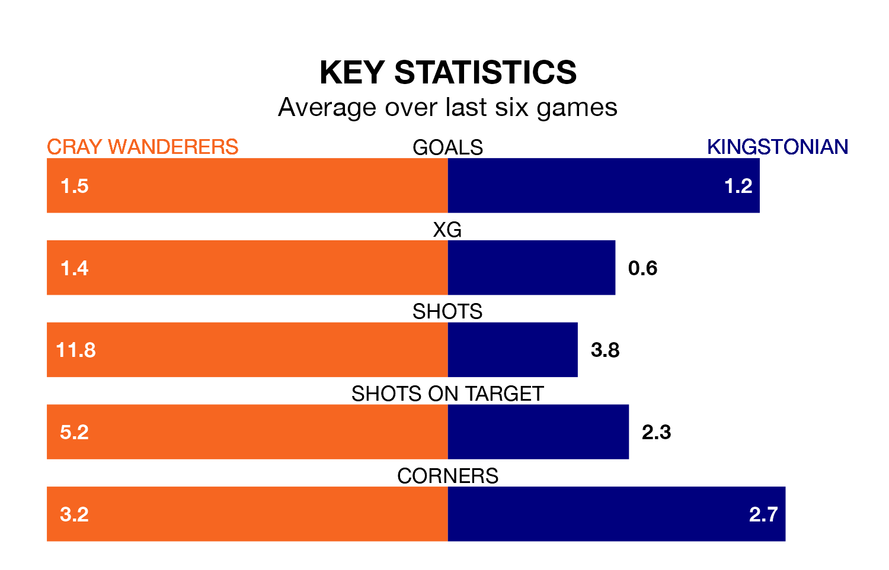

Cray Wanderers face Kingstonian on Saturday seeking to protect their long unbeaten run in the Isthmian Premier Division.
Cray are unbeaten in six, with four wins and two draws, ahead of the 3pm kick-off.
They face a Kingstonian team who have won one and drawn two over the same number of games.
Kingstonian are bottom of the table after 28 games, of which they have won four and drawn five, earning 17 points.
Cray are nine places ahead of the visitors in 13th, with 10 wins and nine draws putting them on 39 points.
In the last 10 years, Cray and Kingstonian have played each other on nine occasions. Cray won three of them, Kingstonian four, and they drew twice.
On average, Cray scored 1.1 goals and Kingstonian 1.3 in those matches.
Their last meeting was on September 30, when Kingstonian won 3-0 at home.
With 37 goals in 30 games so far this season, Wanderers are scoring at below the league average rate with 1.2 goals per game. But they are conceding fewer than average too, letting in 44 goals at a rate of 1.5 per game.
Kingstonian are also below average scorers, with 1.4 goals per game, compared to a league average of 1.6. They have conceded 2.2 goals per game.
Cray's last match was on Wednesday, a 2-1 win against Canvey Island.
Kingstonian drew 0-0 with Enfield Town last time out, on Tuesday.
Updated: 10:08 (UTC), 23/02/24